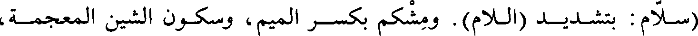
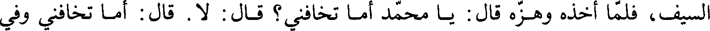
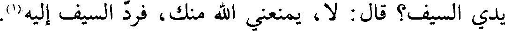
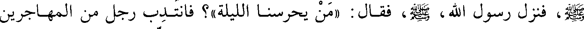
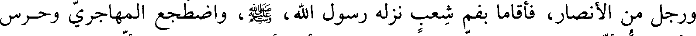
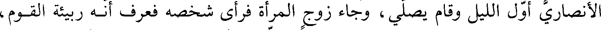

File: 000480.gt.txt (if the image is defective, simply delete all Arabic text and the line will be excluded)

واستخلف(2) على المدينة ابن أم مكتوم، وكانت رايته مع علي بن أبي طالب.
File: 000481.gt.txt (if the image is defective, simply delete all Arabic text and the line will be excluded)

(سلام: بتشديد (اللام). ومشكم بكسر الميم، وسكون الشين المعجمة،
File: 000482.gt.txt (if the image is defective, simply delete all Arabic text and the line will be excluded)
والكاف).
File: 000483.gt.txt (if the image is defective, simply delete all Arabic text and the line will be excluded)
غزوة ذات الرقاع(3)
File: 000484.gt.txt (if the image is defective, simply delete all Arabic text and the line will be excluded)

أقام رسول الله، صلي الله عليه و سلم، بالمدينة بعد بني النضير شهري ربيع، ثم غزا نجدا يريد بني
File: 000485.gt.txt (if the image is defective, simply delete all Arabic text and the line will be excluded)

محارب وبني ثعلبة من غطفان حتى نزل نخلا، وهي غزوة الرقاع، سميت بذلك لأجل
File: 000486.gt.txt (if the image is defective, simply delete all Arabic text and the line will be excluded)

جبل كانت الوقعة به، فيه سواد وبياض وحمرة، فاستخلف على المدينة عثمان بن عفان،
File: 000487.gt.txt (if the image is defective, simply delete all Arabic text and the line will be excluded)

فلقي المشركين ولم يكن قتال، وخاف الناس بعضهم بعضا، فنزلت صلاة الخوف، وقد
File: 000488.gt.txt (if the image is defective, simply delete all Arabic text and the line will be excluded)
اختلف الرواة في صلاة الخوف، وهو مستقصى في كتب الفقه.
File: 000489.gt.txt (if the image is defective, simply delete all Arabic text and the line will be excluded)
وجاء رجل من محارب إلى النبي، صلي الله عليه و سلم، فطلب منه أن ينظر إلى سيفه، فأعطاه
File: 000490.gt.txt (if the image is defective, simply delete all Arabic text and the line will be excluded)

السيف، فلما أخذه وهزه قال: يا محمد أما تخافني؟ قال: لا. قال: أما تخافني وفي
File: 000491.gt.txt (if the image is defective, simply delete all Arabic text and the line will be excluded)

يدي السيف؟ قال: لا، يمنعني الله منك، فرد السيف إليه(1).
File: 000492.gt.txt (if the image is defective, simply delete all Arabic text and the line will be excluded)

وأصاب المسلمون امرأة منهم، وكان زوجها غائبا، فلما أتى أهله أخبر الخبر،
File: 000493.gt.txt (if the image is defective, simply delete all Arabic text and the line will be excluded)

فحلف لا ينتهي حتى يهريق في أصحاب النبي، صلي الله عليه و سلم، دما، وخرج يتبع أثر رسول الله،
File: 000494.gt.txt (if the image is defective, simply delete all Arabic text and the line will be excluded)

صلي الله عليه و سلم، فنزل رسول الله، صلي الله عليه و سلم، فقال: (من يحرسنا الليلة)؟ فانتدب رجل من المهاجرين
File: 000495.gt.txt (if the image is defective, simply delete all Arabic text and the line will be excluded)

ورجل من الأنصار، فأقاما بفم شعب نزله رسول الله، صلي الله عليه و سلم، واضطجع المهاجري وحرس
File: 000496.gt.txt (if the image is defective, simply delete all Arabic text and the line will be excluded)

الأنصاري أول الليل وقام يصلي، وجاء زوج المرأة فرأى شخصه فعرف أنه ربيئة القوم،
File: 000497.gt.txt (if the image is defective, simply delete all Arabic text and the line will be excluded)

فرماه بسهم، فوضعه فيه فانتزعه، وثبت قائما يصلي، ثم رماه بسهم آخر فأصابه، فنزعه
File: 000498.gt.txt (if the image is defective, simply delete all Arabic text and the line will be excluded)

وثبت يصلي، ثم رماه بالثالث فوضعه فيه فانتزعه، ثم ركع وسجد، ثم أيقظ صاحبه
File: 000499.gt.txt (if the image is defective, simply delete all Arabic text and the line will be excluded)
وأعلمه، فوثب فلما رآهما الرجل علم أنهما علما به، فلما رأى المهاجري ما
File: 000500.gt.txt (if the image is defective, simply delete all Arabic text and the line will be excluded)

بالأنصاري قال: سبحان الله ألا أيقظتني أول ما رماك؟ قال: كنت في سورة أقرأها، فلم
File: 000501.gt.txt (if the image is defective, simply delete all Arabic text and the line will be excluded)

احب أن أقطعها، فلما تابع علي الرمي أعلمتك، وأيم الله لولا خوفي أن أضيع ثغرا
File: 000502.gt.txt (if the image is defective, simply delete all Arabic text and the line will be excluded)
أمرني رسول الله، صلي الله عليه و سلم، بحفظه لقطع نفسي قبل أن أقطعها(2).
File: 000503.gt.txt (if the image is defective, simply delete all Arabic text and the line will be excluded)

وقيل: إن هذه الغزوة كانت في المحرم سنة خمس من الهجرة.
File: 000504.gt.txt (if the image is defective, simply delete all Arabic text and the line will be excluded)
ذكر غزوة بدر الثانية(3)
File: 000505.gt.txt (if the image is defective, simply delete all Arabic text and the line will be excluded)

وسميت أيضا غزوة السويق.
File: 000506.gt.txt (if the image is defective, simply delete all Arabic text and the line will be excluded)

وفي شعبان منها خرج رسول الله، صلي الله عليه و سلم، إلى بدر لميعاد أبي سفيان بن حرب، حتى
File: 000507.gt.txt (if the image is defective, simply delete all Arabic text and the line will be excluded)

نزل بدرا، فأقام عليها ثمان ليال ينتظر أبا سفيان، وخرج أبو سفيان في أهل مكة إلى مر
File: 000508.gt.txt (if the image is defective, simply delete all Arabic text and the line will be excluded)

الظهران، وقيل: إلى عسفان، ثم رجع ورجعت قريش معه، فسماهم أهل مكة جيش
File: 000509.gt.txt (if the image is defective, simply delete all Arabic text and the line will be excluded)

السويق، يقولون: إنما خرجتم تشربون السويق(4).
To Save: `Ctrl+s`, make sure to choose `Webpage, complete`!